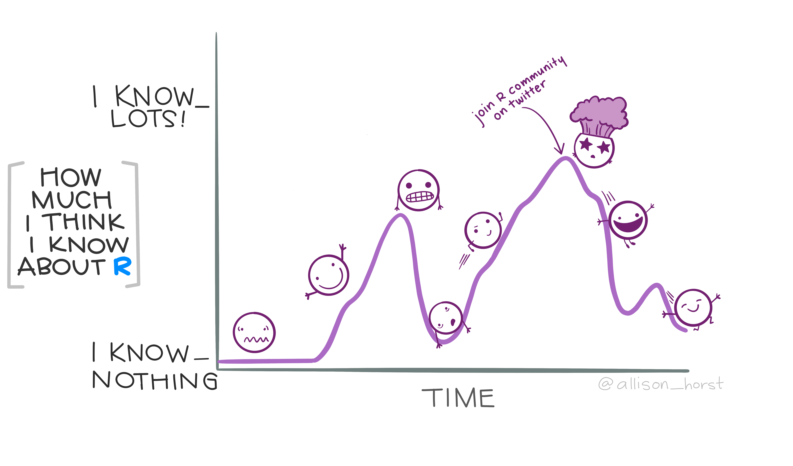

6 TP
6.2 Consigna
El objetivo es producir un reporte reproducible, en RMarkdown (.Rmd) o Quarto (.qmd) (a elección), que describa las características demográficas de una provincia argentina que te interese, utilizando datos del Censo Nacional de Población 2022. El documento debe compilarse en formato HTML.
Los datos los podés encontrar en la web.
El reporte debe incluir
Título que indique la provincia seleccionada, tu nombre como autor/a, y el mes y año del reporte.
Contenidos mínimos del cuerpo del informe:
En un primer chunk debes leer los datos censales directo desde R. En todos los casos utiliza el archivo xlsx referido al Cuadro 4, que contiene la población por sexo y edad.
Va una ayuda para el caso de Total País, donde previamente ingresamos a la sección de total país, descargamos el archivo y lo colocamos en la carpeta data:
library(readxl)
total_país_c2022 <- read_xlsx("data/c2022_tp_est_c4.xlsx", sheet = 3, range = "A4:E127")
total_país_c2022 <- total_país_c2022 %>%
# selecciono las variables que quiero y las renombro ahí mismo con select
select(Edad = 1, Mujer = 3, Hombre = 4) %>%
# me quedo con las edades simples
filter(Edad %in% c(0:99, "100 y más")) Cada estudiante debe adaptar este código a su provincia.
Luego agregar:
- Un párrafo inicial donde se explicite el objetivo del reporte y se mencione la cantidad de población total y su peso relativo respecto del total país, mediante chunks inline.
- Mostrar la pirámide de población mediante el uso del paquete
ggplot2. - Mostrar un mapa provincial con un indicador a elección según departamento (necesario cargar un shapefie con los límites de departamento o radios censales). Sugerimos seleccionar indicadores simples con la información disponible (Ej: porcentaje de mujeres, proporción de población 65+, índice de dependencia, razón de sexos, etc). Es necesario unir la capa geográfica con el indicador mediante left_join y lugeo visualizar el mapa.
- Crear una función que incluya: definición, un ejemplo de su uso y un breve comentario sobre qué hace. Compartimos algunos ejemplos: calcular el índice de dependencia, construir automáticamente la pirámide para cualquier provincia, calcular la razón de sexos por grupos quinquenales, entre otras. La elección es libre para cada estudiante.
- En un párrafo final describir brevemente qué te llamó la atención de la estructura por edad, qué patrones espaciales identificaste en el mapa y conclusiones generales.
6.3 BONUS (opcional)
Incluir un diagrama de lexis con datos simulados (cohortes ficticias) o con los datos de la EDER CABA 2019.
¡IMPORTANTE!
Si bien puede haber una devolución conceptual, no serán evaluadas las conclusiones. El resultado de la evaluación será tarde o temprano “Aprobado”, excepto que no haya entrega `.
Fecha de entrega (maaas o meno): 28/02/2026
¡Buen Viaje!
